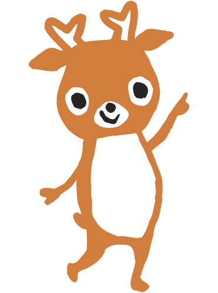
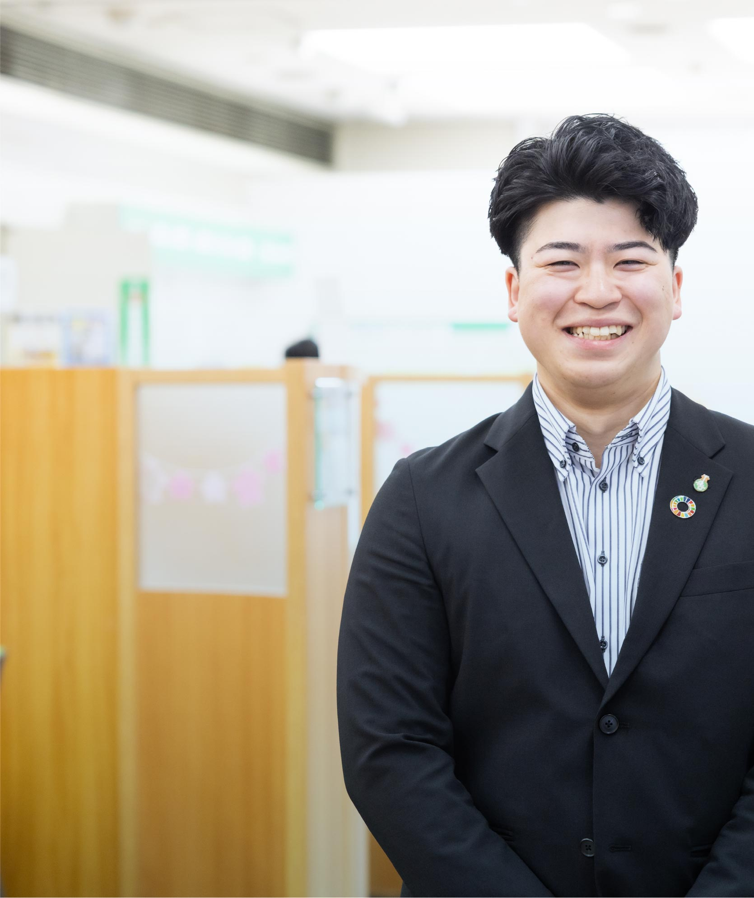
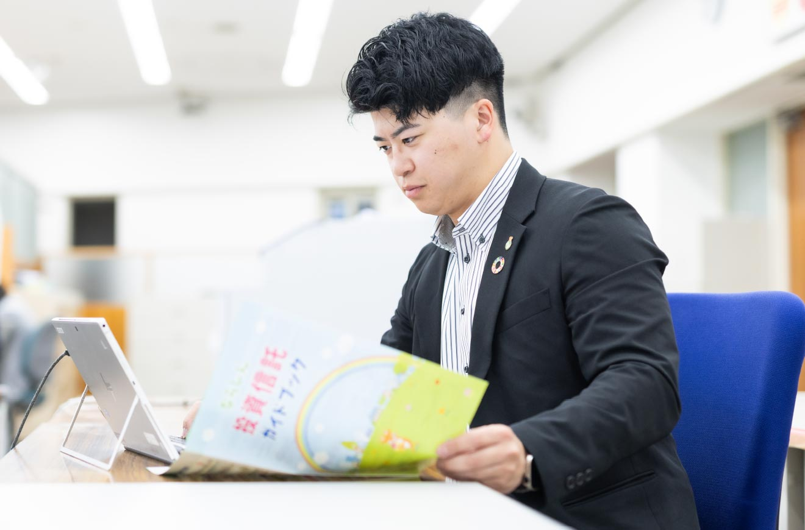
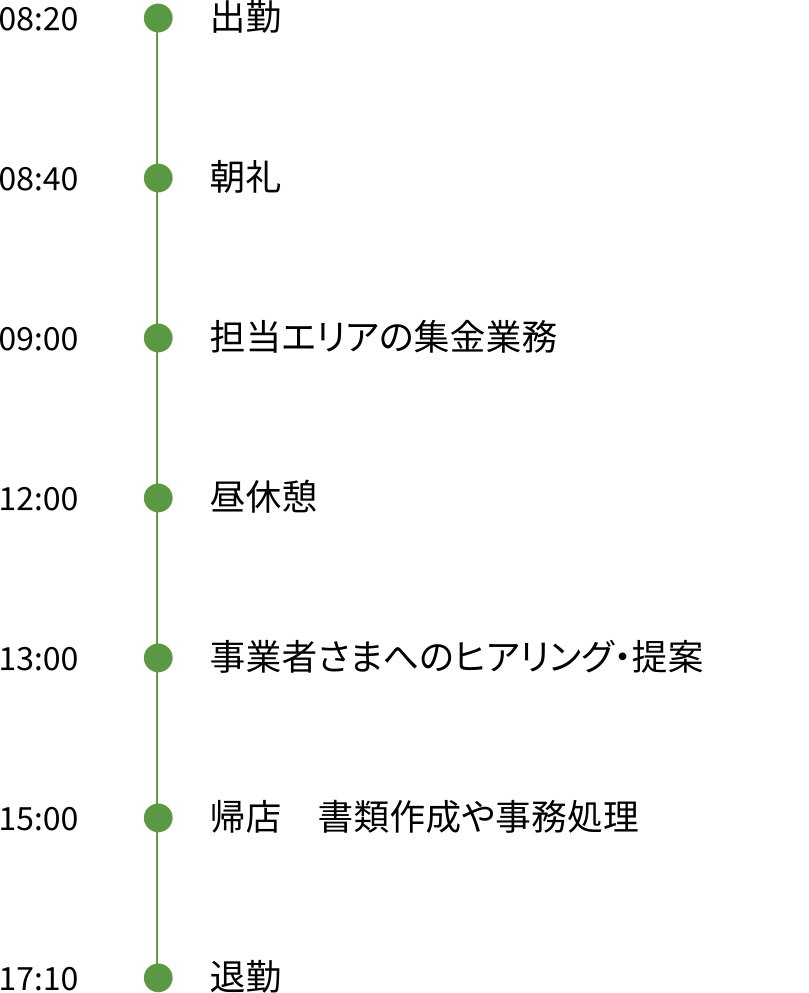
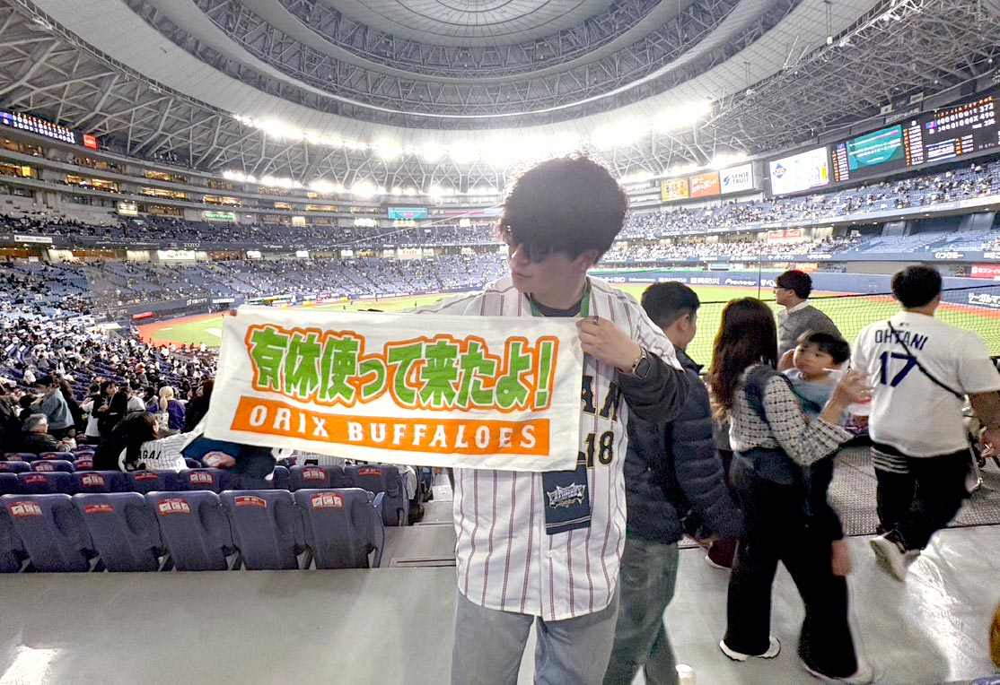
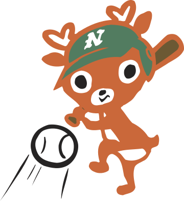

職員インタビューStaff interview
#01
上田 航平
生駒支店 業務推進課
2023年入庫（経済学部卒）


入庫動機
資金面のバックアップを通じて
奈良を盛り上げたいと思った。
奈良は観光名所が多く、自然や食にも恵まれたまちです。地元で生まれ育った私は、そんな魅力が広く知られていないと感じ、奈良を盛り上げる仕事に就きたいと考えるようになりました。金融業界を志望したのは、経済活動の根幹であるお金を扱い、事業者さまへの資金支援を通じて地域活性化に貢献できると思ったからです。なかでも「ならしん」は、お客さまとの距離が近く、さまざまな事業を通じて幅広く支援している点に魅力を感じました。

現在の仕事内容
お客さまに寄り添い、資金面から集客まで幅広いニーズに対応。
業務推進課の外回りとして、担当のお客さまを定期的に訪問しながらフォローを行っています。個人のお客さまには、定期預金・投資信託・保険のご提案。そして事業者さまに対しては、運営事業の状況を確認しながら融資の提案を行っています。私は常に「face to face」で向き合い、相手の話をしっかりと聞きながら金融に関する情報や制度などを伝え、最適な提案を心がけています。例えば事業者さまには売上げ状況はもちろんのこと、物価高騰や資材・原料の不足といった世の中の情勢、業界動向を踏まえつつ、お困りごとを解決できるように努めています。また、「ならしん」は、SNSによる宣伝提案にも力を入れており、本部の広報と連携して取材・撮影に同行して集客アップのお手伝いをすることもあります。お金に関することだけでなく、多様な業務に関わることで、お客さまの事業の理解を深め、次の仕事へとつなげています。
苦労したことや挑戦してきたこと
自ら厳しい個人目標を掲げ
達成したことが大きな自信に！
当初は土地勘がなく、担当エリアの道を覚えることと、細かな事務業務の処理に苦労をしました。それでも外回り2年目には仕事に慣れ、支店に貢献したいという想いから、厳しい年間個人目標を設定。受け身ではなく、自ら仕事をつくり出し、貪欲にチャレンジをしました。その結果、融資の数字目標、職員表彰の受賞の目標を達成。特に総合的な評価を受け、上位に表彰されたことは大きな自信になりました。
仕事のやりがい
お客さまの経営パートナーとして
一緒に創業や事業発展に取り組む。
一番嬉しいのは、お客さまに感謝されることであり、特に創業支援は大きなやりがいを感じます。まずは創業経緯をうかがい、創業計画の策定から事業認可の申請・手続きなど数多くのプロセスを踏んでいきます。年間の収支計画など細かな数字づくりに苦労しつつ、経営パートナーとしてお客さまに伴走。無事に創業を迎え、事業が軌道に乗ったときには地域への貢献を実感でき、自分のやりたかった仕事ができている充実感を覚えます。
自身が成長したと感じるポイント
能動的な行動を通じて
お客さまにベストな提案ができるように。
外回りを任された1年目は、自分が思ったような仕事ができずに不安を感じることもありました。けれども2年目になり、経験を重ねることで能動的に商品の提案ができるようになったのは大きな成長です。ヒアリングの際には事業の状況を聞くだけでなく、さらに深掘りをして潜在ニーズを把握し、お客さまにとってメリットのある最適な商品をご提案。信頼関係の構築や成果にもつながっており、この仕事の楽しさを感じつつあります。
入庫後に感じたギャップ
社会人になってからも
日々の勉強は欠かせない。
私たちはさまざまな金融商品を扱っていますが、そのためには資格が必要です。これまでに生命保険募集人や損害保険募集人、証券外務員などの資格を取得しましたが、想像以上にたくさんの資格があり、社会人になってからこれほど勉強するとは思ってもみませんでした。大変ではありますが業務に役立つことが多く、勉強の習慣も身につきました。さらに上のポジションを目指し、これからも積極的にチャレンジしていきたいと思います。
これからの目標
支店全体に目を向け、大きな裁量を
もとにやりたいことに挑戦したい。
今後は課長として規模の大きな事業者さまを任せてもらい、職員をまとめる役割を担っていきたいと考えています。キャリアを重ね、仕事の責任と権限が大きくなっていくなか、お客さまに役立ち、喜んでいただける支店のイベントを提案するなど、自分のやりたいことに積極的に挑戦していきたいですね。地域の活性化というミッションを掲げ、尊敬する上司のようにお客さまに感謝され、支店の数字に貢献できる職員を目指していきます。
1日のスケジュール

オフの日の過ごし方

月1回は球場に出かけて野球観戦。
この日は有休を取得しました！

キャリア
| 1年目 | 生駒支店営業課 | 支店の窓口で定期預金の預け入れや税金のお支払い、お問い合わせや相談に対応。 |
|---|---|---|
| 1年目 | 生駒支店融資課 | 10月に融資課に異動。主にローンや借入に関するご相談や申し込み対応などを担当。 |
| 2年目 | 生駒支店業務推進課 | 7月からはお客さま先に訪問し、定期預金や投資信託、保険、事業資金の貸出などを提案。 |